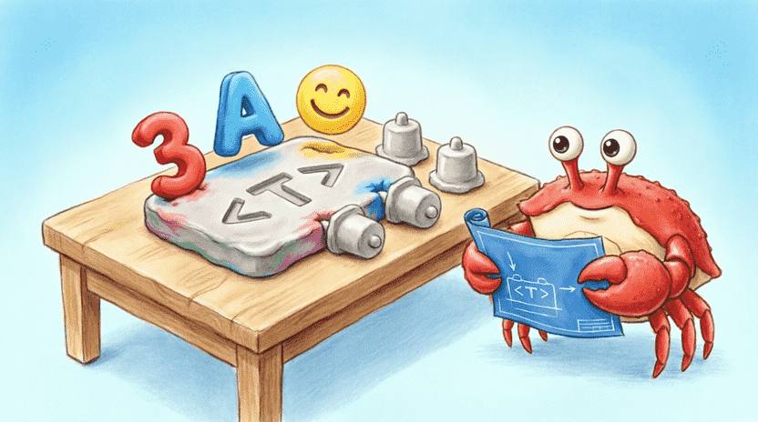
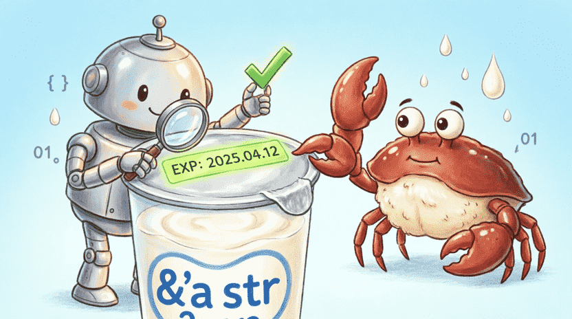

🦀 The Land of Rust: Ferris the Crab’s Space Adventures
Chapter 10: The Toy Factory (Generics & Traits)
📋 Chapter Outline:
10.1. Play-Doh Molds (Generics)
10.1.1. The Story: Star & Heart Molds
In Ferris’s toy factory, he has a special plastic mold shaped like a star. 🌟 This mold only makes one shape, but Ferris can pour red clay, blue clay, green clay, or even glittery clay into it. The result is always a star, but the material and color change.
In programming, we do the exact same thing! We call it Generics. It means writing one piece of code that works with many different types of data, so we don’t have to copy-paste the same code for numbers, text, or other things.
10.1.2. The Problem: Duplicate Code for Different Types
Imagine we want to write a function that finds the largest number in a list. If we write it only for i32:
#![allow(unused)]
fn main() {
fn largest_i32(list: &[i32]) -> i32 {
let mut largest = list[0];
for &item in list {
if item > largest { largest = item; }
}
largest
}
}But what if we want the same thing for f64 (decimals) or char (letters)? We’d have to copy the whole function and just change the type! That’s slow, messy, and full of bugs. 🥲
10.1.3. Introducing Generics with <T>
Instead of copying code, we use a placeholder letter (usually T for Type). T acts like a blank space on a form that the compiler fills in later with the exact type we use:
#![allow(unused)]
fn main() {
fn largest<T>(list: &[T]) -> T {
let mut largest = list[0];
for &item in list {
if item > largest { largest = item; } // ❌ This gives an error! Why?
}
largest
}
}⚠️ Important Note: The compiler complains here because it doesn’t know if T even supports comparison (>)! To fix this, we need Traits (which we’ll learn next). For now, let’s look at simpler generic examples that don’t need comparisons.
10.1.4. Generics in Functions
A simple function that takes anything and gives it right back:
fn identity<T>(value: T) -> T {
value
}
fn main() {
let x = identity(42); // T becomes i32 here
let y = identity("Hello!"); // T becomes &str here
println!("{} and {}", x, y);
}Rust automatically guesses what T should be. We call this Type Inference. 🧠
10.1.5. Generics in Structs
We can build structures where the fields aren’t fixed to one type:
struct Point<T> {
x: T,
y: T,
}
fn main() {
let int_point = Point { x: 5, y: 10 }; // Point<i32>
let float_point = Point { x: 1.5, y: 3.2 }; // Point<f64>
}Notice that x and y must be the same type. If we want mixed types, we use multiple generics.
10.1.6. Multiple Generic Types
struct Pair<T, U> {
first: T,
second: U,
}
fn main() {
let pair = Pair { first: 42, second: "hello" }; // Pair<i32, &str>
}10.1.7. Generics in Methods
When writing methods for a generic struct, we must declare <T> before impl:
#![allow(unused)]
fn main() {
impl<T> Point<T> {
fn x(&self) -> &T {
&self.x
}
}
}We can even write a method that only works for a specific type of T:
#![allow(unused)]
fn main() {
impl Point<f64> {
fn distance_from_origin(&self) -> f64 {
(self.x * self.x + self.y * self.y).sqrt()
}
}
}Now distance_from_origin only works on decimal Points, not integer ones! How smart is that? 📐
10.1.8. Exercise: Container<T>
Create a generic box that holds anything, and give it a get() method to show what’s inside.
💡 Sample Answer:
struct Container<T> {
item: T,
}
impl<T> Container<T> {
fn new(item: T) -> Self {
Container { item }
}
fn get(&self) -> &T {
&self.item
}
}
fn main() {
let c1 = Container::new(42);
let c2 = Container::new(String::from("Ferris"));
println!("{} and {}", c1.get(), c2.get());
}
10.2. Toy Certificates (Traits)
10.2.1. The Story: “Makes Sound” & “Flies” Certificates
In Ferris’s factory, every toy comes with a set of certificates. Some have a “Makes Sound” (MakeSound) certificate. Others have a “Flies” (Fly) certificate. These certificates don’t tell us what the toy looks like; they tell us what it can do. In Rust, we call these certificates Traits. 🏅
10.2.2. Defining a Trait
A trait is just a list of behaviors a type must support:
#![allow(unused)]
fn main() {
trait MakeSound {
fn make_sound(&self);
}
}We don’t write the function body here. We just say: “Whoever claims this certificate must have this method.”
10.2.3. Implementing a Trait for a Type
With impl Trait for Type, we give a struct or enum its certificate:
#![allow(unused)]
fn main() {
struct Dog { name: String }
impl MakeSound for Dog {
fn make_sound(&self) {
println!("{} says: Woof! Woof!", self.name);
}
}
struct Car;
impl MakeSound for Car {
fn make_sound(&self) {
println!("Honk! Honk!");
}
}
}Now Dog and Car both have the MakeSound trait, but they each make their own unique sound!
10.2.4. Using Trait as a Parameter (Trait Bound)
We can write a function that says: “I don’t care what exact type it is, as long as it has this trait!”
#![allow(unused)]
fn main() {
fn notify(item: &impl MakeSound) {
item.make_sound();
}
}Or the classic syntax:
#![allow(unused)]
fn main() {
fn notify<T: MakeSound>(item: &T) {
item.make_sound();
}
}Both do the same thing. The second is better when you have multiple generic types and want to list their rules separately.
10.2.5. Multiple Traits with +
If a type must have two certificates at once, we use +:
#![allow(unused)]
fn main() {
fn fly_and_sound(item: &(impl MakeSound + Fly)) {
item.make_sound();
item.fly();
}
}10.2.6. Returning with impl Trait
We can write a function that returns an unknown type, but promises it has a specific trait:
#![allow(unused)]
fn main() {
fn get_sound_maker() -> impl MakeSound {
Dog { name: String::from("Bella") }
}
}This is super useful when the real return type is complicated, but the user only needs to know it “makes a sound”. 🔊
10.2.7. Built-in Traits (Debug, Clone, PartialEq)
Rust comes with ready-made traits you can add with a single #[derive(...)] line:
| Trait | Purpose | Example |
|---|---|---|
Debug | Pretty printing with {:?} | println!("{:?}", obj); |
Clone | Explicit copying with .clone() | let copy = original.clone(); |
Copy | Automatic copying (for simple types) | let x = 5; let y = x; |
PartialEq | Comparison with == and != | if a == b { ... } |
Example:
#[derive(Debug, Clone, PartialEq)]
struct Monster { name: String, power: u32 }
fn main() {
let m1 = Monster { name: String::from("Dodo"), power: 100 };
let m2 = m1.clone();
println!("{:?}", m1); // Pretty print!
println!("Are they equal? {}", m1 == m2); // true
}10.2.8. Exercise: Area Trait
Create an Area trait that calculates surface area. Implement it for two different shapes and print their areas.
💡 Sample Answer:
trait Area {
fn area(&self) -> f64;
}
struct Circle { radius: f64 }
impl Area for Circle {
fn area(&self) -> f64 {
std::f64::consts::PI * self.radius * self.radius
}
}
struct Rectangle { width: f64, height: f64 }
impl Area for Rectangle {
fn area(&self) -> f64 { self.width * self.height }
}
fn main() {
let c = Circle { radius: 5.0 };
let r = Rectangle { width: 4.0, height: 6.0 };
println!("Circle area: {:.2}", c.area());
println!("Rectangle area: {:.2}", r.area());
}![[Illustration: A cartoon quality-control desk. A friendly robot inspector stamps “CERTIFIED” badges labeled “MakeSound”, “Fly”, and “Debug” onto different toys (a dog, a car, a robot). Ferris watches proudly holding a checklist. Style: clean vector illustration, educational metaphor, bright colors.]](assets/images/10.2.png)
10.3. Expiration Date Stickers (Lifetimes – Brief Intro)
10.3.1. The Story: Yogurt Expiration Dates
When you buy yogurt, it has an expiration date. It’s safe to eat until that date, but afterward, it goes bad. In Rust, when we create a reference, it also has an “expiration date” called a Lifetime ('a). It tells the compiler how long that reference stays valid. ⏳
10.3.2. The Problem: Reference to Dead Data
#![allow(unused)]
fn main() {
let r;
{
let x = 5;
r = &x;
} // x dies here and is cleaned up!
println!("{}", r); // ❌ Error! r points to empty space.
}Rust sees this and refuses to compile. This is exactly why Rust is one of the safest languages in the world! 🛡️
10.3.3. Writing Lifetime with 'a
Sometimes the compiler gets confused about which input a function’s output belongs to. We help it with 'a:
#![allow(unused)]
fn main() {
fn longest<'a>(x: &'a str, y: &'a str) -> &'a str {
if x.len() > y.len() { x } else { y }
}
}This means: “The returned reference will live exactly as long as the shorter-lived input.” Now the compiler knows it won’t point to dead data.
10.3.4. Lifetime Elision (Rust’s Smart Guessing)
🎉 Great news: In 95% of cases, you don’t need to write 'a! Rust has simple rules to guess it automatically:
- Every input reference gets its own hidden lifetime.
- If there’s only one input reference, the output gets that same lifetime.
- If there are multiple inputs and one is
&selfor&mut self, the output getsself’s lifetime.
So functions like fn first_word(s: &str) -> &str work perfectly without explicit 'a! ✨
10.3.5. Lifetimes in Structs
If a struct wants to hold a reference, it must declare a lifetime:
struct Excerpt<'a> {
part: &'a str,
}
fn main() {
let novel = String::from("Once upon a time...");
let first_sentence = novel.split('.').next().unwrap();
let excerpt = Excerpt { part: first_sentence };
println!("{}", excerpt.part);
}This tells the compiler: “As long as excerpt exists, novel must also exist so part doesn’t break.”
10.3.6. Don’t Worry, Rust Has Your Back!
For now, just remember: Lifetimes are safety stickers that prevent dangling references. In most of this book, Rust figures them out for you. If you’re curious, check Appendix A for a deeper dive! 📖

10.4. Project: Shape Library with Generics & Traits
Let’s build a small but professional shape library that calculates area and perimeter for any shape! 📐🔺🟦
10.4.1. Define the Shape Trait
#![allow(unused)]
fn main() {
trait Shape {
fn area(&self) -> f64;
fn perimeter(&self) -> f64;
}
}10.4.2. Define struct Circle<T>
#![allow(unused)]
fn main() {
struct Circle<T> {
radius: T,
}
}10.4.3. Implement Shape for Circle<T>
Since formulas need f64, we must ensure T can convert to it. We use where for clean conditions:
#![allow(unused)]
fn main() {
use std::f64::consts::PI;
impl<T> Shape for Circle<T>
where
T: Into<f64> + Copy,
{
fn area(&self) -> f64 {
let r: f64 = self.radius.into();
PI * r * r
}
fn perimeter(&self) -> f64 {
let r: f64 = self.radius.into();
2.0 * PI * r
}
}
}where means: “T must be able to convert to f64 AND be copyable.”
10.4.4. Define struct Rectangle<T, U>
#![allow(unused)]
fn main() {
struct Rectangle<T, U> { width: T, height: U }
impl<T, U> Shape for Rectangle<T, U>
where
T: Into<f64> + Copy,
U: Into<f64> + Copy,
{
fn area(&self) -> f64 {
let w: f64 = self.width.into();
let h: f64 = self.height.into();
w * h
}
fn perimeter(&self) -> f64 {
2.0 * (self.width.into() + self.height.into())
}
}
}10.4.5. Using Trait Objects (Box<dyn Shape>)
Now we want a list containing both circles and rectangles. Since they’re different sizes, we can’t put them directly in an array. The solution? Trait Objects!
fn main() {
let circle = Circle { radius: 3.0 };
let rect = Rectangle { width: 4.0, height: 5.0 };
let shapes: Vec<Box<dyn Shape>> = vec![
Box::new(circle),
Box::new(rect),
];
for shape in shapes {
println!("Area: {:.2}, Perimeter: {:.2}", shape.area(), shape.perimeter());
}
}dyn Shape means: “This box can hold anything that has the Shape trait.” Box puts it in flexible memory so size doesn’t matter. Now we can loop through completely different shapes in one list! 🎉
![[Illustration: A cartoon universal shipping box labeled “Box<dyn Shape>”. Inside, different 3D shapes (circle, rectangle, triangle) with glowing trait badges are neatly stacked. Ferris operates a conveyor belt placing them into the box. Style: dynamic, educational vector, bright colors.]](assets/images/10.4.png)
10.5. Summary & Challenge
10.5.1. What You Learned
In this chapter, you discovered:
✅ Generics (<T>): Writing reusable code for any type without duplication.
✅ Traits: Defining shared behaviors (like MakeSound or Shape).
✅ Trait Bounds (T: Trait): Restricting generics to types that implement a trait.
✅ impl Trait: Simplifying parameters and return types.
✅ Lifetimes ('a): Ensuring reference safety by defining valid time ranges (brief intro).
✅ Trait Objects (Box<dyn Trait>): Storing different types with shared behavior in one collection.
10.5.2. Challenge: Fix the largest Function
Remember the largest function that errored at the start? Now, using the PartialOrd trait (which adds > comparison) and Copy, complete it so it works for any slice of comparable types.
💡 Sample Answer:
fn largest<T: PartialOrd + Copy>(list: &[T]) -> T {
let mut largest = list[0];
for &item in list {
if item > largest { largest = item; }
}
largest
}
fn main() {
let numbers = vec![34, 50, 25, 100, 65];
println!("Largest number: {}", largest(&numbers));
let chars = vec!['y', 'm', 'a', 'q'];
println!("Largest character: {}", largest(&chars));
}Now you know how to write all-purpose code with Generics and define shared behaviors with Traits. You also took your first look at Lifetimes and saw how Rust guarantees memory safety! 🛡️ In the next chapter, we’ll learn how to use Tests to make sure our programs always work correctly, just like testing a spaceship before launch! 🚀🧪
![[Illustration: Ferris wearing a graduation cap and safety goggles, holding a glowing “Chapter 10 Master” badge. Floating around him are generic molds <T>, trait certificates, lifetime stickers 'a, and a universal box. Encouraging, bright lighting, children’s book style.]](assets/images/10.5.png)